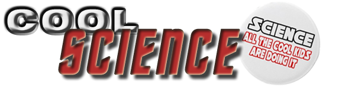

With so many innovations happening globally in the STEM world, we bring you a beginning collection of COOL SCIENCE!
At TEDIndia, Pranav Mistry demos several tools that help the physical world interact with the world of data -- including a deep look at his SixthSense device and a new, paradigm-shifting paper "laptop." - 14 minutes
Doris Kim Sung is a biology student turned architect interested in thermo-bimetals, smart materials that respond dynamically to temperature change. - 9 minutes
At TEDIndia, Pranav Mistry demos several tools that help the physical world interact with the world of data -- including a deep look at his SixthSense device and a new, paradigm-shifting paper "laptop." - 14 minutes
Tesla Battle - 7 minutes
Doris Kim Sung is a biology student turned architect interested in thermo-bimetals, smart materials that respond dynamically to temperature change. - 9 minutes
Copyright ©
EDUHSD Robotics. All rights reserved.